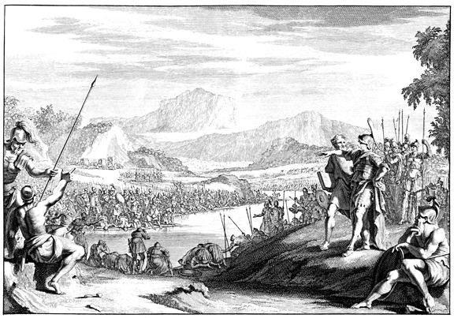

Jueces 7 — La Traducción Mister

⚠ La lámina toma la prueba de Jueces 7:5–6 y no la batalla. Los hombres se arrodillan junto al agua y beben, y Gedeón está de pie en el promontorio de la derecha, observando; el campamento queda al otro lado del río, como lo sitúa el v1. El texto dice que trescientos lamieron llevándose la mano a la boca mientras el resto se arrodillaba, y la imagen no separa los dos grupos con esa claridad. Es la escena que el capítulo pide imaginar, dibujada por dos artistas neerlandeses para una Biblia de 1670.
Notas del traductor — versículo por versículo
Jerobaal, es decir Gedeón. El nombre que el libro le dio en Jueces 6:32 (ya en estas páginas) va primero, para que el lector sepa qué hombre acampa junto al manantial. El hebreo pone los dos nombres uno junto al otro, y la traducción conserva ambos.
«Ein Harod». Ein es un manantial, y este manantial aparece en un solo versículo de la Biblia hebrea. El lugar se nombra con charod, temblar, la palabra que el versículo 3 usará para los hombres que tienen miedo; así el lector conoce primero el manantial y después el temblor. La TNM 1987 dice «junto al pozo de Harod», y la TNM 2019 «junto al manantial de Harod»; la traducción conserva «manantial», que es lo que significa ein.
La colina de Moré. La colina de Moré aparece en un solo versículo. Moré es la palabra para maestro, y también la palabra para la lluvia temprana (Joel 2:23). La traducción conserva «Moré» sin elegir, porque el hebreo deja abiertas ambas lecturas; la TNM 1987 dice «junto a la colina de Moré».
«Para que Israel no se jacte». El versículo 2 da la razón del recorte: pen yitpa’er, para que Israel no se jacte, frase que aparece en un solo versículo, este. La jactancia se cita completa: mi propia mano me salvó. La TNM 1987 dice «Israel tal vez se gloriaría contra mí», y la TNM 2019 «Mi propia mano me salvó».
«Temeroso y tembloroso». Yare ve-chared, el que tiene miedo y el que tiembla, aparece en un solo versículo, el versículo 3. El discurso de los oficiales en Deuteronomio 20:8 (ya en estas páginas) despide a un hombre que tiene miedo, pero con otras palabras; y este versículo despide a los que tiemblan del ejército junto al manantial. La TNM 1987 dice «¿Quién hay que tema y tiemble?».
«Levante vuelo desde el monte de Galaad». El verbo yitzpor es el verbo del vuelo de un pájaro, de la misma raíz que tsippor, pájaro. A los hombres se les dice que vuelen a casa de madrugada. La traducción dice «levante vuelo», que es lo bastante extraño para llevar al lector a esta nota. La TNM 2019 dice «puede volverse a su casa», y no conserva el pájaro. Veintidós mil se van, y diez mil se quedan.
«Te los refinaré». El verbo del versículo 4 es tsaraf, refinar metal en el fuego, y no es el verbo de «probar» en Jueces 6:39 (ya en estas páginas). El agua es el horno, y los hombres son ensayados por cómo beben. La TNM 1987 dice «ponértelos a prueba allí»; la traducción dice «refinar», porque la palabra trata del metal y el lector debe oírlo.
«Como lame el perro». Yalaq es el verbo del lamer de un perro, y es el verbo de 1 Reyes 21:19, donde los perros lamen la sangre de Nabot. La TNM 1987 dice «tal como lame el perro», y la TNM 2019 «como lo hacen los perros». La traducción conserva el animal en la frase.
Trescientos que lamen, y el resto que se arrodilla. Los hombres que llevan la mano a la boca en el versículo 6 son los que se quedan, y el resto se arrodilla para beber. El texto da la prueba y no la razón, así que el lector no sabe por qué se escogen los que lamen. Los comentaristas han ofrecido varias razones, y la traducción no elige entre ellas. El versículo 7 repite la palabra «lamieron», y la traducción conserva la misma palabra las dos veces.
«Las provisiones del pueblo». El versículo 8 hace que los hombres entreguen su comida y sus cuernos a los trescientos, y los hombres de Israel vuelven a casa. La palabra de las provisiones es la comida que un hombre lleva en un viaje, y la traducción dice «provisiones» porque el lector necesita saber que el ejército sale con lo que puede cargar.
«Los hombres armados». Los «armados» del versículo 11 son la palabra chamushim, que aparece en Éxodo 13:18 y Josué 1:14 (ambos ya en estas páginas), y en Josué 4:12 (ya en estas páginas). La nota de Josué 4 ya llamó a este versículo el lugar donde Gedeón se para al borde del campamento de Madián, y esta nota es donde la palabra se lee en su último sentido. La entrada del diccionario enumera los cuatro versículos.
Purá el criado. El hombre que baja con Gedeón se llama su criado, naar, la misma palabra que nombra a un joven siervo. La traducción dice «criado» porque la palabra cubre al servidor de un comandante en la guerra, no a un muchacho.
«Tan numerosos como las langostas». El enemigo es el que Jueces 6:5 (ya en estas páginas) compara con langostas, y los camellos son los mismos. La TNM 1987 dice «tan numerosos como las langostas», y la TNM 2019 pone a los camellos «tantos que no podían contarse». La traducción conserva la langosta.
«Como la arena a la orilla del mar». Los camellos se cuentan con la arena de la orilla del mar, las mismas palabras que Dios usa para la descendencia de Abraham en Génesis 22:17 (ya en estas páginas). Las medidas que el enemigo tiene para sus camellos son la promesa hecha a Abraham, y el lector puede oír la comparación sin que se fuerce.
«Una torta de pan de cebada». La palabra tsalil, torta o pan, aparece en un solo versículo de la Biblia hebrea. La TNM 1987 dice «una torta redonda de pan de cebada». La traducción deja que el verbo haga el rodar. La cebada es el grano más pobre, y 2 Reyes 4:42 tiene panes de cebada como alimento llevado a un profeta.
Un sueño leído por un compañero. El soñador es un hombre que cuenta a su compañero, y la frase «un sueño a su compañero» aparece en un solo versículo. El compañero da la lectura al instante: el sueño es la espada de Gedeón. Ambos están en el campamento de Madián, así que el que habla nombra a Dios, ha-Elohim, y no a Jehová. La traducción dice «Dios» porque quien habla no es de Israel.
«Se inclinó para adorar». Gedeón oye el sueño y su lectura, y se inclina antes de dar cualquier orden. El verbo es el verbo de inclinarse en adoración, y la traducción dice «se inclinó para adorar» para que se vea el acto. La TNM 1987 dice «empezó a adorar», y la TNM 2019 «se inclinó para adorar a Dios».
«Tres compañías». El versículo 16 divide a los trescientos en tres compañías, y la frase «los tres jefes» aparece en un solo versículo, el versículo 20. La palabra para cabeza es también la del jefe de un cuerpo, y la traducción dice «compañías» en el versículo 16 y conserva la misma palabra en el 20. La TNM 1987 dice «en tres partidas».
Antorchas dentro de los cántaros. Las armas son cuernos, cántaros vacíos y antorchas. El cántaro esconde la luz hasta que se rompe, y el versículo 19 los rompe. La traducción dice «antorchas dentro de los cántaros» y deja el cántaro en la imagen.
«Por Jehová y por Gedeón». El grito que Gedeón ordena en el versículo 18 no tiene espada: le-Jehová ul-Gedeón. El versículo 20 agrega una, cherev le-Jehová ul-Gedeón, «¡la espada de Jehová y de Gedeón!». El grito aparece en dos versículos, 18 y 20, y la espada está solo en el 20. La TNM 1987 dice «¡De Jehová y de Gedeón!» en el versículo 18, y «¡La espada de Jehová y de Gedeón!» en el 20.
«La vigilia intermedia». Ashmoret ha-tikhonah, la vigilia intermedia, aparece en un solo versículo. El hebreo cuenta la noche en tres vigilias, donde el cómputo romano de Mateo 14:25 (ya en estas páginas) tiene cuatro. El versículo 19 pone a Gedeón llegando justo después de apostar a los centinelas, y la traducción dice «justo cuando acababan de apostar a los centinelas».
Cuernos tocados, cántaros rotos. Las tres compañías tocan los cuernos y rompen los cántaros en el versículo 20, y las antorchas se sostienen en la mano izquierda y los cuernos en la derecha. La traducción conserva las manos, porque la escena depende de ellas.
«La espada de cada uno contra su compañero». Cherev ish be-re’ehu, la espada de cada hombre contra su compañero, aparece en tres versículos de la Biblia hebrea: este, 1 Samuel 14:20, donde el pánico en el ejército de Saúl toma la misma forma, y Ezequiel 38:21, donde la espada del invasor se vuelve contra sus propias compañías. Las primeras palabras son las mismas en los tres, y la traducción las mantiene iguales.
«Hasta Bet-sitá». Bet-sitá aparece en un solo versículo. Zererá aparece en un solo versículo junto a ella. Abel-meholá aparece en tres versículos: aquí, 1 Reyes 4:12, y 1 Reyes 19:16, donde Eliseo hijo de Safat es ungido profeta desde Abel-meholá. La TNM 1987 dice «hasta Bet-sitá, adelante a Zererá, hasta las afueras de Abel-meholá, junto a Tabat». La huida va hacia el este, hacia el Jordán.
Oreb y Zeeb. Los dos príncipes llevan los nombres del cuervo y del lobo. «La peña de Oreb» aparece en dos versículos: aquí, y en Isaías 10:26, donde el azote de Jehová de los ejércitos se levanta como en el golpe de Madián en la peña de Oreb. La peña se recuerda como el lugar donde Madián fue herido. «El lagar de Zeeb» aparece en un solo versículo. Los mismos dos nombres vienen juntos en Salmo 83:11 (aún por llegar en esta traducción; el hebreo lo numera 83:12), donde los enemigos son llamados a ser como Oreb y como Zeeb. La TNM 1987 dice «en la roca de Oreb» y «en la tina de lagar de Zeeb».
«Desde el otro lado del Jordán». Las cabezas son llevadas a Gedeón desde el otro lado del Jordán, me-ever la-yarden. La frase no dice en qué orilla está Gedeón, y la traducción deja eso abierto. La TNM 2019 dice «en el lagar de vino de Zeeb», y la TNM 1987 «en la región del Jordán».
Las cabezas de los príncipes. La persecución termina con las cabezas traídas, y el libro no describe la reacción de Gedeón aquí. Jueces 8:3 (ya en estas páginas) vuelve a los dos nombres cuando los hombres de Efraín se quejan, y la historia de las cabezas continúa allí.
Patrones que vale la pena recordar
Dónde esta traducción conserva las palabras exactas y distintas: «manantial» para ein en el versículo 1, y «levante vuelo» para yitzpor en el versículo 3, donde el pájaro se conserva en el verbo; «refinar» para tsaraf en el versículo 4, separado de la «prueba» de Jueces 6:39; «lamieron» para la misma palabra las dos veces en el versículo 7; «compañías» para los tres jefes de los versículos 16 y 20; «la vigilia intermedia» para ashmoret ha-tikhonah; y «Por Jehová y por Gedeón» sin espada en el versículo 18, con «¡La espada de Jehová y de Gedeón!» en el 20.
Ecos pagados. Las langostas y los camellos de Jueces 6:5 regresan en el versículo 12, y los amalecitas y los hijos del oriente de 6:3 con ellos. El llamado a Neftalí, Aser y Manasés de 6:35 se responde en el versículo 23. Los chamushim que Josué 4 dejó para este capítulo se leen aquí en el versículo 11. Los cuatro turnos de Mateo 14 se contraponen a los tres del versículo 19. El «temeroso y tembloroso» de Deuteronomio 20:8 recibe respuesta en el versículo 3.
Ecos sembrados. Oreb y Zeeb regresan en Jueces 8:3 (ya en estas páginas), y la peña de Oreb en Isaías 10:26. La espada de cada uno contra su compañero vuelve en 1 Samuel 14:20 y en Ezequiel 38:21 (ambos aún por llegar en esta traducción). Abel-meholá, el lugar hacia el que huyó el ejército, es de donde viene Eliseo en 1 Reyes 19:16. Los perros que lamen en 1 Reyes 21:19 son los que el lamer de este capítulo ya trae a la memoria.
Próxima entrega de este libro: Jueces 8 — los hombres de Efraín se quejan, Gedeón da una respuesta suave, y los dos reyes de Madián son alcanzados al otro lado del desierto; Sucot y Penuel son castigados por su negativa.